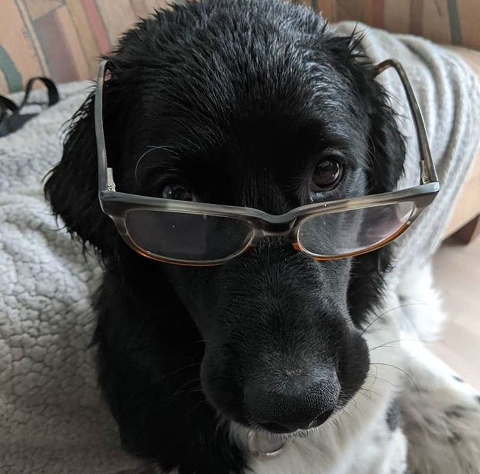

Hello! My name is minoesje from the Shanniiwrites forum. This is my page for the Shanniwrites coding school! I hope you guys would be able to give me some tips on how to improve on my frontend I have been trying to learn frontend for 2 years... but it just isn't really working for me. Oh and btw, I'm sorry for any spelling mistakes that I might make... Please tell me if I made any errors. Again I'm really sorry. To make up for it I will show you a picture of my puppy! I hope I placed it right in the coding though...
This is Kai! You might have already seen him on the forums somewhere because he is my pride and joy! He's born in october last year! This means that he's 8 months old! It's a Friese Stabij. I looked it up and in english they call him a Frisian pointer, Stabij or stabyhoun. There are dutch dogs form Friesland. This is a county in the north of the netherlands. The Friese Stabij can become 13 til 14 years old , and they are in the colors: Roan , black-white, brown-white and orange-white. A full grown male have an avarage height of 53 cm and females have an avarage height of 50cm. I got Kai for my 18th birthday this year and we've become bestfriends ever since. Kailoves going for long walks and Kai is almost always in for a hug! Just recently not so much because it's pretty hot here. Well This was a short story about my big dogy! please follow my dog on intsa if you want to see more pic's!The insta is in dutch because I'm sharing it with my sister but you can always just look at the pic's! His insta is: kai_vermeulen_2020